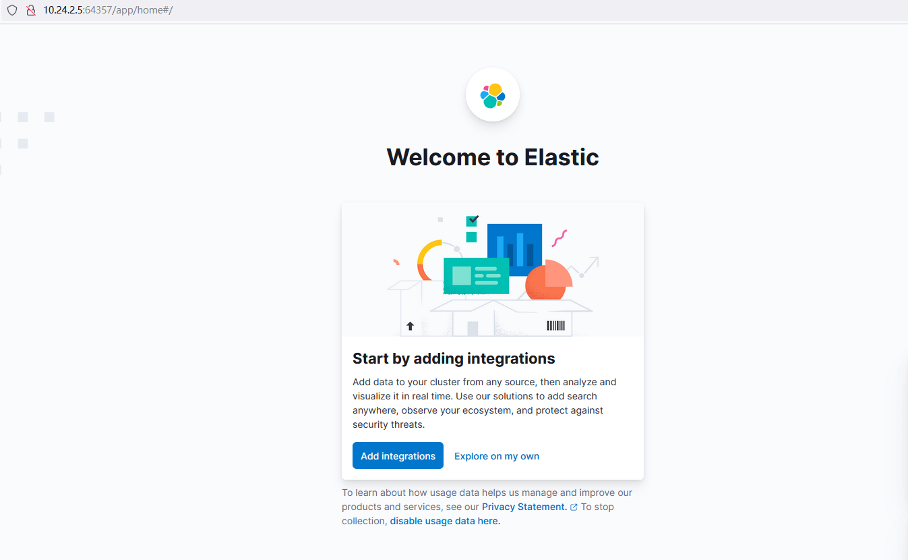
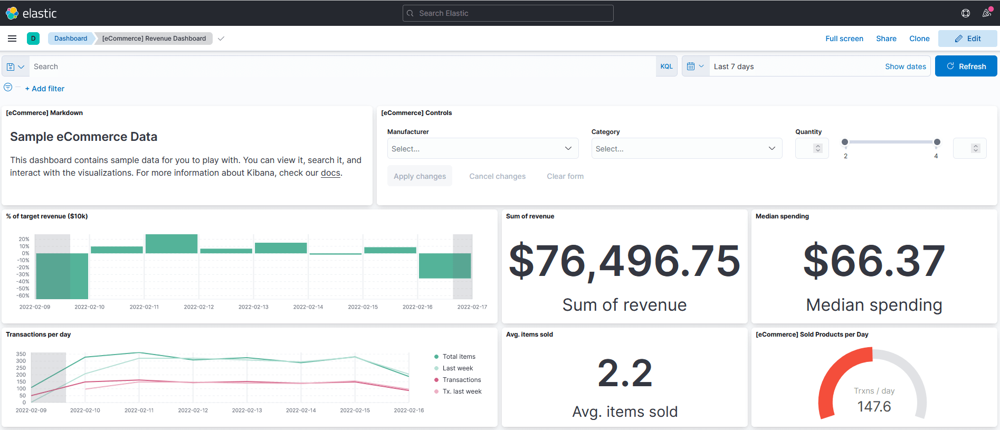

k8s：(6)基于Helm3实现服务发布案例
案例描述
（1）了解Helm3的基本使用。
（2）了解自定义charts包的制作。
（3）掌握使用Helm3部署服务到Kubernetes集群。
规划节点
节点规划，见表1。
表1 节点规划
| IP | 主机名 | 节点 |
|---|---|---|
| 10.24.2.5 | master | master、worker节点 |
基础准备
Kubernetes v1.22集群已部署完成。将提供的软件包 Helm.tar.gz上传至master节点/root目录下并解压。
案例实施
Helm简介
Helm介绍
Helm是Deis开发的一个用于Kubernetes应用的包管理工具，主要用来管理Charts。类似于Ubuntu中的apt或CentOS中的yum。Helm Chart是用来封装Kubernetes原生应用程序的一系列YAML文件。可以在部署应用的时候自定义应用程序的一些Metadata，以便于应用程序的分发。对于应用发布者而言，可以通过Helm打包应用、管理应用依赖关系、管理应用版本并发布应用到软件仓库。对于使用者而言，使用Helm后不用需要编写复杂的应用部署文件，可以以简单的方式在Kubernetes上查找、安装、升级、回滚、卸载应用程序。
Helm的主要功能如下：
● 查找要安装和使用的预打包软件
● 轻松创建和托管自己的软件包
● 将软件包安装到任何K8S集群中
● 查询集群以查看已安装和正在运行的程序包
● 更新、删除、回滚或查看已安装软件包的历史记录
核心概念
Helm主要有三个核心概念：Chart、Repos和Release。
Helm使用的包格式称为chart，它是一个描述Kubernetes相关资源对象的文件集合。它的技术特点类似jinja模版，以渲染模版的方式，生成运行一个服务实例所需的一系列资源对象文件，并以此进行服务的发布。通过这种方式，我们也可以十分简单的制作自定义的chart。
Helm chart可以被存储在专用的HTTP服务器上，称为chart仓库（repositories)，和yum repository类似，chart仓库提供了一个index.yaml来描述一批chart，并且提供了每个chart的下载地址信息。
当chart被发布后，Helm库会创建一个release来跟踪这个发布的对象，它的实质是在Kubernetes中运行的各种资源，service、deployment、configmap、secret等，在K8S集群中的直接的表现就是一个或多个Pod。
创建自定义文件
Helm最核心的就是模板，即模板化的Kubernetes manifests文件。
它本质上就是一个Go的template模板。Helm在Go template模板的基础上，还会增加很多东西。如一些自定义的元数据信息、扩展的库以及一些类似于编程形式的工作流，例如条件语句、管道等等。这些东西都会使得我们的模板变得更加丰富。
定义chart
解压软件包并导入镜像：
1 | [root@k8s-master-node1 ~]# tar -zxvf Helm.tar.gz |
一个chart包就是一个文件夹的集合，文件夹名称就是chart包的名称，比如创建一个mychart的chart包：
1 | [root@k8s-master-node1 ~]# helm create mychart |
chart基本元素释义如下：
1 | [root@k8s-master-node1 ~]# tree mychart/ |
自定义YAML文件
删除templates目录下面所有文件：
1 | [root@k8s-master-node1 ~]# rm -rfv mychart/templates/* |
自定义Deployment模板文件：
1 | [root@k8s-master-node1 ~]# cat mychart/templates/deployment.yaml |
实际上现在就是一个可安装的chart包了，通过helm install命令来进行安装：
1 | [root@k8s-master-node1 ~]# helm install web mychart |
可以看到资源对象已经创建了，这样部署与直接使用“kubectl apply”部署差别不大。
查看release：
1 | [root@k8s-master-node1 ~]# helm list |
查看Pod：
1 | [root@k8s-master-node1 ~]# kubectl get pods |
使用如下命令可以看到实际的模板被渲染过后的资源文件：
1 | [root@k8s-master-node1 ~]# helm get manifest web |
删除当前release：
1 | [root@k8s-master-node1 ~]# helm delete web |
定义模板
创建模板
可以看到上面我们定义的Service和Deployment的名字是固定的，但往往这并不是一种很好的做法，可以通过插入release的名称来生成资源的名称，这就需要用到Chart的模板定义方法了。
Helm hart模板使用的是Go语言模板编写而成，并添加了Sprig库中的50多个附件模板函数以及一些其他特殊函数。
编辑Deployment模板：
1 | [root@k8s-master-node1 ~]# cat mychart/templates/deployment.yaml |
这里将资源名称替换成了 {{ .Release.Name }} , 其中包含在 {{ }} 之中的就是模板指令, {{ .Release.Name }} 将release的名称注入到模板中来，这样最终生成的资源名称就是以release的名称开头的了。这里的Release模板对象属于Helm内置的一种对象。
编辑传入变量的values.yaml：
1 | [root@k8s-master-node1 ~]# cat mychart/values.yaml |
调试
Helm提供了–dry-run –debug这个可选参数，在执行helm install的时候带上这两个参数就可以把对应的values值和生成的最终的资源清单文件打印出来，而不会真正的去部署一个release实例，比如调试上面创建的chart包：
1 | [root@k8s-master-node1 ~]# helm install web01 --dry-run mychart/ |
调试过程无报错就可以进行安装了：
1 | [root@k8s-master-node1 ~]# helm install web01 mychart/ |
查看Pod：
1 | [root@k8s-master-node1 ~]# kubectl get pods |
内置对象
刚刚使用{{.Release.Name}}将release的名称插入到模板中。这里的Release就是Helm的内置对象，下面是一些常用的内置对象：
● Release.Name：release名称；
● Release.Time：release的时间；
● Release.Namespace：release的namespace（如果清单未覆盖）；
● Release.Service：release服务的名称（始终是Tiller）；
● Release.Revision：此release的修订版本号，从1开始累加；
● Release.IsUpgrade：如果当前操作是升级或回滚，则将其设置为true；
● Release.IsInstall：如果当前操作是安装，则设置为true。
上面这些值可用于任何顶级模板，要注意内置对象始终以大写字母开头。这也符合Go的命名约定。
更新
此时如果想更新配置就比较方便了，比如将nginx镜像的版本换成1.18：
1 | [root@k8s-master-node1 ~]# cat mychart/values.yaml |
Values
Values对象是为Chart模板提供值，这个对象的值有4个来源：
● chart包中的values.yaml文件
● 父chart包的values.yaml文件
● 通过helm install或helm upgrade的-f或者–values参数传入的自定义的yaml文件
● 通过–set参数传入的值
chart的values.yaml提供的值可以被用户提供的values文件覆盖，而该文件同样可以被–set提供的参数所覆盖。
例如新建一个应用，副本数只有1个：
1 | [root@k8s-master-node1 ~]# helm install web02 --set replicas=1 mychart |
删除release：
1 | [root@k8s-master-node1 Helm]# helm delete web01 web02 |
Chart的管道与函数
模板函数
模块实质上就是将值传给模板引擎进行渲染，这些信息都是直接传入模板引擎中进行渲染的，有的时候需要转换一下这些数据才进行渲染，模板引擎支持对拿到数据进行二次处理，这就需要使用到Go模板语言中的一些其他用法。
例如给标签（labels）加双引号，修改Deployment模板template字段：
1 | [root@k8s-master-node1 ~]# cat mychart/templates/deployment.yaml |
调试查看结果：
[root@k8s-master-node1 ~]# helm install web03 –dry-run mychart
1 | [root@k8s-master-node1 ~]# helm install web03 --dry-run mychart |
可以看到标签“nginx”加上了一个双引号。
管道
模板语言除了提供了丰富的内置函数之外，其另一个强大的功能就是管道的概念。和UNIX中一样，管道也通常称为Pipeline，是一个链在一起的一系列模板命令的工具，以紧凑地表达一系列转换。简单来说，管道是可以按顺序完成一系列事情的一种方法。
比如使用管道重写上面的Deployment模板：
1 | [root@k8s-master-node1 ~]# cat mychart/templates/deployment.yaml |
调试查看运行结果：
1 | [root@k8s-master-node1 ~]# helm install web03 --dry-run mychart |
可以看到标签“nginx”加上了一个双引号，效果和之前一样。
default函数
default函数（default DEFAULT_VALUE GIVEN_VALUE）允许在模板内部指定默认值，以防止该值被忽略掉了。
例如新加一个值：test: demotest，修改Deployment模板template字段：
1 | [root@k8s-master-node1 ~]# cat mychart/templates/deployment.yaml |
调试查看运行结果：
1 | [root@k8s-master-node1 ~]# helm install web03 --dry-run mychart/ |
可以看到，定义的test: demotest已经生效。
因为没有在values.yaml中定义test的值，所以默认其值为demotest。如果在values.yaml中定义了，其值就以values.yaml中的值为准。
例如在values.yaml中把test的值定义为123456：
1 | [root@k8s-master-node1 ~]# cat mychart/values.yaml |
调试查看运行结果：
1 | [root@k8s-master-node1 ~]# helm install web03 --dry-run mychart/ |
可以看到test的值被渲染成了123456。
流程控制
模板函数和管道是通过转换信息并将其插入到YAML文件中。有时候需要添加一些比插入字符串更复杂一些的模板逻辑，这就需要使用到模板语言中提供的控制结构了。
控制流程为提供了控制模板生成流程的一种能力，Helm的模板语言提供了以下几种流程控制：
● if/else条件块
● with指定范围
● range循环块
除此之外，它还提供了一些声明和使用命名模板段的操作：
● define在模板中声明一个新的命名模板
● template导入一个命名模板
● block声明了一种特殊的可填写的模板区域
if
if/else块是用于在模板中有条件地包含文本块的方法，条件块的基本结构如下：
1 | {{ if PIPELINE }} |
当然要使用条件块就得判断条件是否为真，如果值为下面的几种情况，则管道的结果为 false：
● 一个布尔类型的假
● 一个数字0
● 一个空的字符串
● 一个nil（空或null）
● 一个空的集合（map、slice、tuple、dict、array）
除了上面的这些情况外，其他所有条件都为真。
例如判断test的值来赋予一个新的值，修改Deployment模板template字段：
1 | [root@k8s-master-node1 ~]# cat mychart/templates/deployment.yaml |
修改values.yaml中test的值，
1 | [root@k8s-master-node1 ~]# cat mychart/values.yaml |
调试查看运行结果：
1 | [root@k8s-master-node1 ~]# helm install web03 --dry-run mychart/ |
可以看到，根据values的值，可以判断赋予devops这个字段的值。
其中运算符eq是判断是否相等的操作，除此之外，还有 ne、 lt、 gt、 and、 or等运算符。
其中渲染出来会有多余的空行，这是因为当模板引擎运行时，会将控制指令删除，所有之前占的位置也就空白了，所以需要使用 {undefined{- if …}} 的方式消除此空行。
with
with用来控制变量作用域。{{ .Release.xxx }} 或者 {{ .Values.xxx }} 中的.就是表示对当前范围的引用，.Values就是告诉模板在当前范围中查找Values对象的值。而with语句就可以来控制变量的作用域范围，其语法和一个简单的if语句比较类似：
1 | {{ with PIPELINE }} |
例如添加一个标签，修改values.yaml文件：
1 | [root@k8s-master-node1 ~]# cat mychart/values.yaml |
在Deployment模板中containers字段前面加入if判断内容：
1 | [root@k8s-master-node1 ~]# cat mychart/templates/deployment.yaml |
调试查看运行结果：
1 | [root@k8s-master-node1 ~]# helm install web --dry-run mychart/ |
可以看到渲染的YAML文件中加入了指定的内容。
修改Deployment模板中containers字段前的内容，改为使用with：
1 | [root@k8s-master-node1 ~]# cat mychart/templates/deployment.yaml |
调试查看运行结果：
1 | [root@k8s-master-node1 ~]# helm install web --dry-run mychart/ |
可以看到效果和之前一致。
这种方式还不够简化，要指定key值，可以用toYaml函数来处理，修改Deployment模板：
1 | [root@k8s-master-node1 ~]# cat mychart/templates/deployment.yaml |
再次调试运行：
1 | [root@k8s-master-node1 ~]# helm install web --dry-run mychart/ |
运行得到的结果和前面一样。其中with是一个循环构造，使用.Values.nodeSelector中的值将其转换为YAML。 toYaml之后的点是循环中.Values.nodeSelector的当前值。使用nindent 8是因为用toYaml函数得到的值都是顶格，需要缩进8个字符，保持语法正确，并且每缩进一行都需要换行。
range
在Helm模板语言中，range用于进行循环操作。
在values.yaml文件中添加上一个变量列表：
1 | [root@k8s-master-node1 ~]# cat mychart/values.yaml |
在templates目录下面新建一个configmap.yaml文件：
1 | [root@k8s-master-node1 ~]# cat mychart/templates/configmap.yaml |
调试运行查看结果：
1 | [root@k8s-master-node1 ~]# helm install web --dry-run mychart/ |
可以看到被渲染的YAML文件中加入了指定的内容。
打包chart
打包chart
使用helm package命令打包chart：
1 | [root@k8s-master-node1 ~]# helm package mychart/ |
查看chart包：
1 | [root@k8s-master-node1 ~]# ls |
部署EFK服务
系统运维人员通过日志对系统应用进行监控运维管理，甚至基于日志进行一些数据分析工作，保障系统应用运行的稳定性，且帮助开发人员快速定位错误。
当项目迁移到Kubernetes进行部署管理之后，虽然在弹性伸缩以及服务器资源的利用率方面得到了优化，但是Kubernetes在日志管理方面并没有提供相关的支持，由于应用服务会动态调节，即部署到不同的服务器上面，因此应用日志的管理单纯依赖挂载日志文件已经不能很好的解决应用日志管理的问题，迫切需要一个日志采集系统对Kubernetes上面的应用日志进行统一采集管理，才能保证应用运行稳定性。
EFK不是一个软件，而是一套解决方案，开源软件之间的互相配合使用，高效的满足了很多场合的应用，是目前主流的一种日志系统。EFK是三个开源软件的缩写，分别表示：Elasticsearch、FileBeat和Kabana。其中ELasticsearch负责日志保存和搜索，FileBeat负责收集日志，Kibana负责界面。EFK和ELK的区别在于EFK把ELK的Logstash替换成了FileBeat，因为Filebeat相对于Logstash来说侵入低，无需修改程序目前任何代码和配置，且性能更高。
部署Elasticsearch
部署Elasticsearch：
1 | [root@k8s-master-node1 ~]# cd Helm/ |
查看release：
1 | [root@k8s-master-node1 Helm]# helm list |
查看Pod：
1 | [root@k8s-master-node1 Helm]# kubectl get pods |
部署FileBeat
部署FileBeat：
1 | [root@k8s-master-node1 Helm]# helm install filebeat efk/filebeat/ |
查看release：
1 | [root@k8s-master-node1 Helm]# helm list |
查看Pod：
1 | [root@k8s-master-node1 Helm]# kubectl get pods |
部署Kibana
部署Kinaba：
1 | [root@k8s-master-node1 Helm]# helm install kibana efk/kibana/ |
查看release：
1 | [root@k8s-master-node1 Helm]# helm list |
查看Pod：
1 | [root@k8s-master-node1 Helm]# kubectl get pods |
访问EFK
查看Service：
1 | [root@k8s-master-node1 ~]# kubectl get svc |
可以看到Kinaba对外暴露的NodePort端口为64357，通过http://master:64357访问Kibana，如图所示：

图1
点击“Explore on my own”，如图所示：
图2
点击“Try sample data”，如图所示：
图3
选择样例数据中的任意一个，如选择“Sample eCommerce orders”，然后点击“Add data”，耐心等待数据添加结束，数据添加完成后如图所示：

图4
点击“View data”→“Dashboard”，可以看到一些样例数据的内容展现，如图所示：

图5